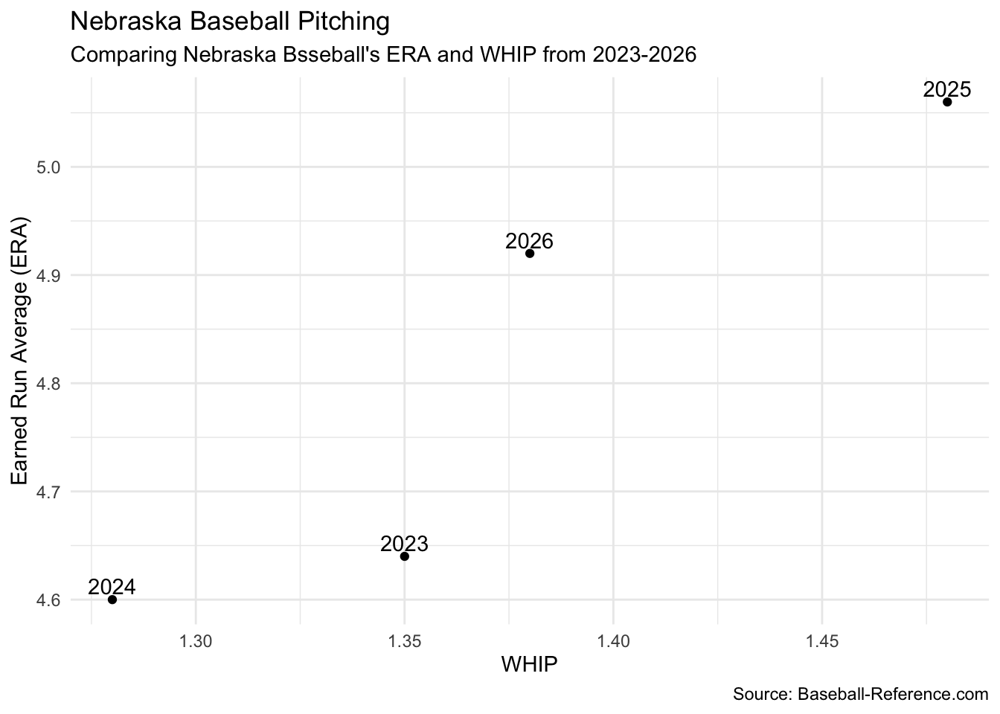
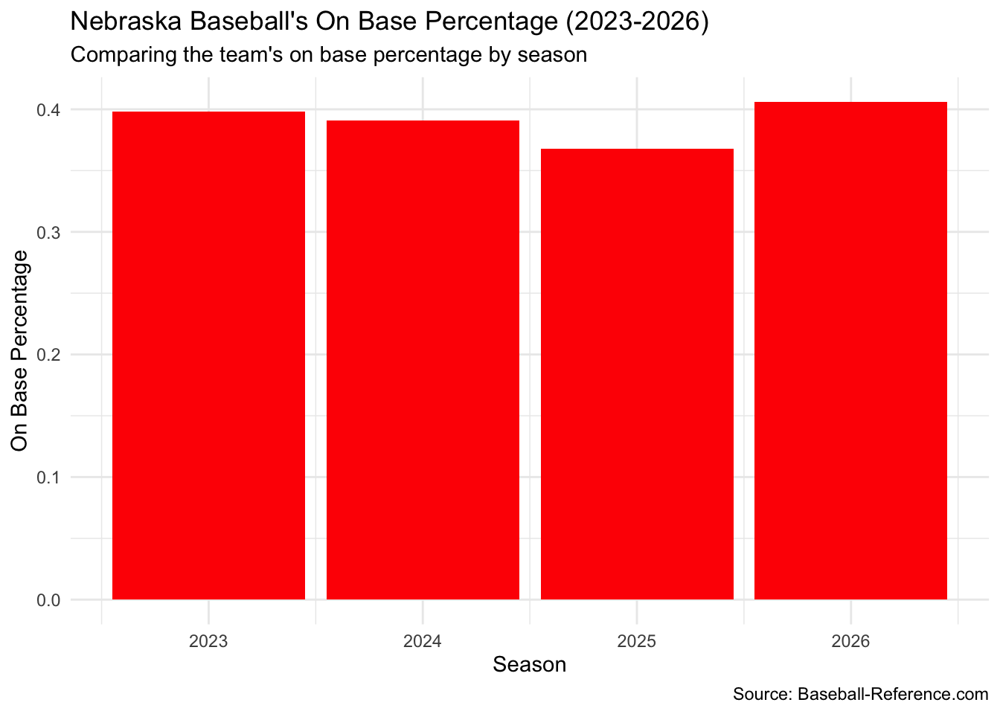
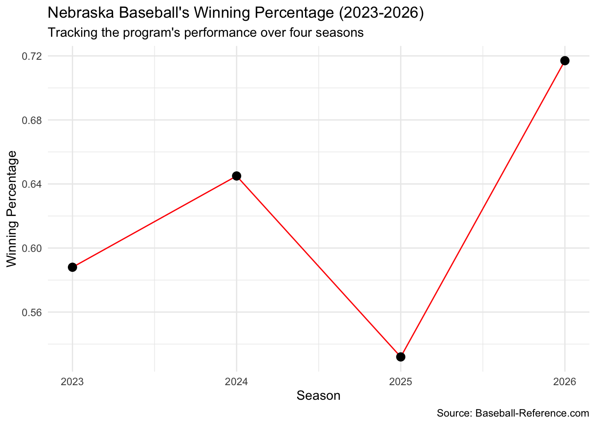

Nebraska Baseball has seen recent success under Head Coach Will Bolt. After struggling to find consistency and establish itself as a conference power, Nebraska baseball has seemed to figure itself out. With back to back conference tournament championships, and three straight regional appearances (1 hosted), we will look how the Nebraska baseball team has earned their success.
Nebraska Pitching in Recent Years
Pitching is without a doubt the most important aspect of a baseball team as it dictates whether or not a team will succeed. Within pitching are two main stats that will determine the outcome of a game. A team’s earned run average. or ERA, tells us how many earned runs a team will give up, on average, in a 9 inning game. Along with ERA in determining the outcome of a game is WHIP or walks and hits per inning. This is an arguably more important stat as it shows how hittable a team is, and how many freebies they give up with walks.
We will see the visualization of Nebraska’s ERA and WHIP from 2023-2026 where the success of its baseball team started to take off. If a team wants to start finding success, it must establish a dominant pitching rotation.
Code
library(tidyverse)nebraska <-read_csv("nebraska_baseball_2023_2026.csv")ggplot(nebraska, aes(x = WHIP, y = ERA)) +geom_point() +geom_text(aes(label = year), vjust =-.35) +labs(title ="Nebraska Baseball Pitching", subtitle ="Comparing Nebraska Bsseball's ERA and WHIP from 2023-2026", x ="WHIP", y ="Earned Run Average (ERA)", caption ="Source: Baseball-Reference.com") +theme_minimal()

We can see how Nebraska ERA and WHIP from 2023-2026 has changed, but not in a consistent way. Even though Nebraska has not grown consistently in recent years, the teams ERA and WHIP being similar throughout the years do show the start of consistency which is the first step in becoming a conference power.
Nebraska Getting On Base
On the offensive side of baseball, most people would say that batting average is what determines if a team has a good offense. While that definitely could correlate to that, I believe that a team that simply gets on base more often would contribute to having a better offense.
Sure getting hits will generate more runs for a team but what truly extends innings and frustrates pitching is when teams constantly find a way to get on base. Getting on base allows teams to find opportunities to score, and increase their offensive production. We’ll see a visualization of Nebraska’s one base percentage (OBP) and how it can correlate to a more successful season.
Code
ggplot() +geom_bar(data = nebraska, aes(x = year, weight = OBP), fill ="red") +labs(title ="Nebraska Baseball's On Base Percentage (2023-2026)", subtitle ="Comparing the team's on base percentage by season", x ="Season", y ="On Base Percentage", caption ="Source: Baseball-Reference.com") +theme_minimal()

Similar to the previous visualization, Nebraska’s OBP throughout those recent years have been very close to each other. This once again shows the consistency that Nebraska is showing, which is a good sign of starting to establish themselves as a conference power.
Stats Turning into Wins
After looking at the pitching and OBP of Nebraska Baseball from 2023-2026, it’s easy to predict how each of those seasons turned out. After all, having a good pitching staff, and high production offense are the main keys to winning.
We will look at a final visualization of the winning percentage from each of those seasons, and see if the previous visualizations correlate to the final season results.
Code
ggplot(nebraska, aes(x = year, y = WPCT)) +geom_line(color ="red") +geom_point(color ="black", size =3) +labs(title ="Nebraska Baseball's Winning Percentage (2023-2026)", subtitle ="Tracking the program's performance over four seasons", x ="Season", y ="Winning Percentage", caption ="Source: Baseball-Reference.com") +theme_minimal()

We can see how all of these seasons turned out, and whether or not good pitching and productive offenses correlate to successful seasons. Our graphic shows how each season had a winning percentage above 50% and one season even jumping to nearly 72% showing how different seasons perform with their respective stats.
Conclusion
When we break down each season’s stats compared to its winning percentage we can really see how those stats correlate to the season’s success. We can see how Nebraska’s 2025 season had both the worst pitching and offensive performances, which transitioned to the winning percentage being the lowest of the four seasons we looked at. On the other hand, the 2026 season had the highest OBP and a solid pitching performance which led to a nearly 72% winning percentage, and the best season of the four we looked at as Nebraska even hosted its own regional that year.
What we have learned is that to be a successful baseball team, teams must limit earned runs, walk less batters, and find a way to get on base. While those factors may seem easy to accomplish, the growth of skill in baseball has made it quite the opposite.